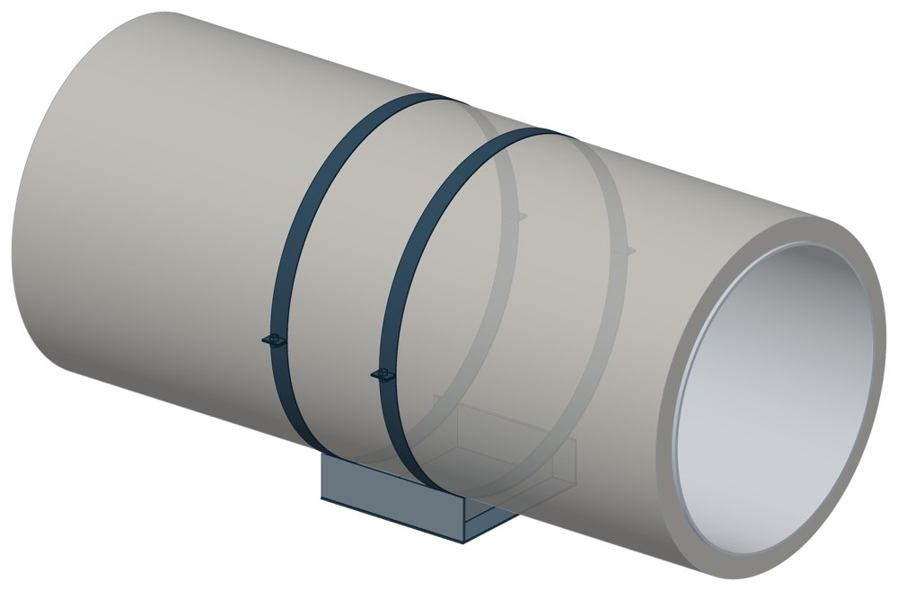

Опоры хомутовые скользящие подкладные СПОн для ППУ труб
Серия 1-487-1997.01.000. Dн 219–1420 мм, масса 5,8–129,3 кг.

- Диаметр трубы Dн
- 219–1420 мм
- Документ
- Серия 1-487-1997.01.000
- Исполнений
- 51
- Масса
- 5,8–129,3 кг
- 3D-модели
- у всех исполнений (условные: общий вид по габаритам)
Таблица исполнений СПОн
| Обозначение | Код ПРОМБУРГ | Dнмм | Стенка Sмм | Диаметр Dмм | Диаметр Dизмм | Высота Нмм | Высота hмм | Ширина Вмм | h1мм | Длина λмм | Массакг | 3D |
|---|---|---|---|---|---|---|---|---|---|---|---|---|
| СПОн-219/315.100 | ПБ-СПОН-0219-1 | 219 | 44 | 320 | 315 | 210 | 100 | 160 | 62 | 250 | 5,8 | 3D |
| СПОн-219/400.100 | ПБ-СПОН-0219-2 | 219 | — | 410 | 400 | 210 | 100 | 180 | 16 | 300 | 7,1 | 3D |
| СПОн-273/400.100 | ПБ-СПОН-0273-1 | 273 | 26 | 410 | 400 | 237 | 100 | 180 | 42 | 300 | 6,9 | 3D |
| СПОн-273/500.100 | ПБ-СПОН-0273-2 | 273 | — | 510 | 500 | 261 | 100 | 220 | 20 | 300 | 8,8 | 3D |
| СПОн-325/400.100 | ПБ-СПОН-0325-1 | 325 | 50 | 410 | 400 | 263 | 100 | 190 | 66 | 350 | 10,8 | 3D |
| СПОн-325/450.100 | ПБ-СПОН-0325-2 | 325 | 25 | 460 | 450 | 263 | 100 | 210 | 64 | 350 | 10,8 | 3D |
| СПОн-325/500.100 | ПБ-СПОН-0325-3 | 325 | — | 510 | 500 | 263 | 100 | 230 | 20 | 350 | 11,2 | 3D |
| СПОн-426/500.100 | ПБ-СПОН-0426-1 | 426 | 50 | 510 | 500 | 313 | 100 | 250 | 78 | 450 | 15,3 | 3D |
| СПОн-426/560.100 | ПБ-СПОН-0426-2 | 426 | 20 | 570 | 560 | 313 | 100 | 270 | 48 | 450 | 15,9 | 3D |
| СПОн-426/630.100 | ПБ-СПОН-0426-3 | 426 | — | 640 | 630 | 328 | 100 | 310 | 36 | 450 | 15,3 | 3D |
| СПОн-530/630.100 | ПБ-СПОН-0530-1 | 530 | 35 | 640 | 630 | 365 | 100 | 310 | 66 | 440 | 24,8 | 3D |
| СПОн-530/710.100 | ПБ-СПОН-0530-2 | 530 | — | 720 | 710 | 372 | 100 | 350 | 40 | 440 | 24,2 | 3D |
| СПОн-630/800.100 | ПБ-СПОН-0630-1 | 630 | — | 810 | 800 | 417 | 100 | 390 | 42 | 440 | 27,6 | 3D |
| СПОн-720/900.100 | ПБ-СПОН-0720-1 | 720 | — | 910 | 900 | 470 | 100 | 460 | 52 | 510 | 40,3 | 3D |
| СПОн-820/1000.100 | ПБ-СПОН-0820-1 | 820 | — | 1010 | 1000 | 520 | 100 | 520 | 57 | 510 | 48,4 | 3D |
| СПОн-920/1100.100 | ПБ-СПОН-0920-1 | 920 | — | 1110 | 1100 | 570 | 100 | 550 | 60 | 510 | 57,2 | 3D |
| СПОн-1020/1200.100 | ПБ-СПОН-1020-1 | 1020 | — | 1210 | 1200 | 620 | 100 | 580 | 67 | 510 | 64,4 | 3D |
| СПОн-1220/1400.100 | ПБ-СПОН-1220-1 | 1220 | — | 1410 | 1400 | 720 | 100 | 700 | 80 | 680 | 92,1 | 3D |
| СПОН-1420Л600.100 | ПБ-СПОН-1420-1 | 1420 | — | 1610 | 1600 | 825 | 100 | 825 | 96 | 680 | 121,4 | 3D |
| СПОн-219/315.150 | ПБ-СПОН-0219-3 | 219 | 94 | 320 | 315 | 260 | 150 | 160 | '2 | 250 | 6,7 | 3D |
| СПОн-219/400.150 | ПБ-СПОН-0219-4 | 219 | 50 | 410 | 400 | 260 | 150 | 180 | 66 | 300 | 7,5 | 3D |
| СПОн-273/400.150 | ПБ-СПОН-0273-3 | 273 | 76 | 410 | 400 | 287 | 150 | 180 | 92 | 300 | 8 | 3D |
| СПОн-273/500.150 | ПБ-СПОН-0273-4 | 273 | 26 | 510 | 500 | 287 | 150 | 220 | 50 | 300 | 8,2 | 3D |
| СПОн-325/400.150 | ПБ-СПОН-0325-4 | 325 | 100 | 410 | 400 | 313 | 150 | 190 | 116 | 350 | 12,6 | 3D |
| СПОн-325/450.150 | ПБ-СПОН-0325-5 | 325 | 75 | 460 | 450 | 313 | 150 | 210 | 114 | 350 | 12,7 | 3D |
| СПОн-325/500.150 | ПБ-СПОН-0325-6 | 325 | 50 | 510 | 500 | 313 | 150 | 230 | 74 | 350 | 12,1 | 3D |
| СПОн-426/500.150 | ПБ-СПОН-0426-4 | 426 | 100 | 510 | 500 | 363 | 150 | 250 | 128 | 450 | 16 | 3D |
| СПОн-426/560.150 | ПБ-СПОН-0426-5 | 426 | 70 | 570 | 560 | 363 | 150 | 270 | 98 | 450 | 16,5 | 3D |
| СПОн-426/630.150 | ПБ-СПОН-0426-6 | 426 | 35 | 640 | 630 | 363 | 150 | 310 | 66 | 450 | 16,7 | 3D |
| СПОн-530/630.150 | ПБ-СПОН-0530-3 | 530 | 85 | 640 | 630 | 415 | 150 | 310 | 116 | 440 | 28,4 | 3D |
| СПОн-530/710.150 | ПБ-СПОН-0530-4 | 530 | 43 | 720 | 710 | 415 | 150 | 350 | 82 | 440 | 28 | 3D |
| СПОн-630/800.150 | ПБ-СПОН-0630-2 | 630 | 48 | 810 | 800 | 465 | 150 | 390 | 86 | 440 | 32 | 3D |
| СПОн-720/900.150 | ПБ-СПОН-0720-2 | 720 | 39 | 910 | 900 | 510 | 150 | 460 | 88 | 510 | 45,7 | 3D |
| СПОн-820/1000.150 | ПБ-СПОН-0820-2 | 820 | 39 | 1010 | 1000 | 560 | 150 | 520 | 96 | 510 | 54,5 | 3D |
| СПОн-920/1100.150 | ПБ-СПОН-0920-2 | 920 | 39 | 1110 | 1100 | 610 | 150 | 550 | 130 | 510 | 65,5 | 3D |
| СПОн-1020/1200.150 | ПБ-СПОН-1020-2 | 1020 | 39 | 1210 | 1200 | 660 | 150 | 580 | 102 | 510 | 70,6 | 3D |
| СПОН-1220/400.150 | ПБ-СПОН-1220-2 | 1220 | 39 | 1410 | 1400 | 760 | 150 | 700 | 117 | 680 | 101,8 | 3D |
| СПОн-1420/1600.150 | ПБ-СПОН-1420-2 | 1420 | 35 | 1610 | 1600 | 860 | 150 | 800 | 44 | 680 | 129,3 | 3D |
| СПОн-219/315.200 | ПБ-СПОН-0219-5 | 219 | 144 | 320 | 315 | 260 | 200 | 160 | 162 | 250 | 7,6 | 3D |
| СПОн-219/400.200 | ПБ-СПОН-0219-6 | 219 | 100 | 410 | 400 | 260 | 200 | 180 | 116 | 300 | 8,6 | 3D |
| СПОн-273/400.200 | ПБ-СПОН-0273-5 | 273 | 126 | 410 | 400 | 287 | 200 | 180 | 142 | 300 | 9,2 | 3D |
| СПОн-273/500.200 | ПБ-СПОН-0273-6 | 273 | 76 | 510 | 500 | 287 | 200 | 220 | 100 | 300 | 9,4 | 3D |
| СПОн-325/400.200 | ПБ-СПОН-0325-7 | 325 | 150 | 410 | 400 | 313 | 200 | 190 | 166 | 350 | 14,6 | 3D |
| СПОн-325/450.200 | ПБ-СПОН-0325-8 | 325 | 125 | 460 | 450 | 313 | 200 | 210 | 164 | 350 | 15,5 | 3D |
| СПОн-325/500.200 | ПБ-СПОН-0325-9 | 325 | 100 | 510 | 500 | 313 | 200 | 230 | 134 | 350 | 14,3 | 3D |
| СПОн-426/500.200 | ПБ-СПОН-0426-7 | 426 | 150 | 510 | 500 | 363 | 200 | 250 | 178 | 450 | 20,3 | 3D |
| СПОн-426/560.200 | ПБ-СПОН-0426-8 | 426 | 120 | 570 | 560 | 363 | 200 | 270 | 148 | 450 | 19,7 | 3D |
| СПОн-426/630.200 | ПБ-СПОН-0426-9 | 426 | 85 | 640 | 630 | 363 | 200 | 310 | 116 | 450 | 20 | 3D |
| СПОн-530/630.150 | ПБ-СПОН-0530-5 | 530 | 135 | 640 | 630 | 465 | 150 | 310 | 166 | 440 | 32,5 | 3D |
| СПОн-530/710.150 | ПБ-СПОН-0530-6 | 530 | 93 | 720 | 710 | 465 | 150 | 350 | 142 | 440 | 32,7 | 3D |
| СПОн-630/800.150 | ПБ-СПОН-0630-3 | 630 | — | 810 | 800 | 515 | — | — | — | — | — | 3D |
Чтобы заказать, сообщите обозначение и код ПРОМБУРГ: +7 (499) 325-51-35, promburg@yandex.ru.
Нормативные документы
- Серия 1-487-1997.01.000 — документ, по которому изготавливается изделие
Связанные позиции
- Соседний тип: СПОк — Опоры хомутовые скользящие СПОк для труб в ППУ
Собрать узел с этим изделием
- Конструктор узла: собрать участок с компенсатором под свои данные труба, длина, среда, условия — состав узла и спецификация бесплатно
На трубу Dн 219–1420 мм в каталоге
Позиции каталога с исполнениями на те же наружные диаметры трубы.
Детали трубопровода
- Фланец стальной плоский приварной общих Dн: 12
- Фланец стальной воротниковый общих Dн: 11
- Отвод стальной крутоизогнутый 90° общих Dн: 10
- Днище стальное эллиптическое общих Dн: 9
- Отвод стальной крутоизогнутый 90°, 09Г2С общих Dн: 8
- Заглушка стальная эллиптическая общих Dн: 6
- Переход стальной концентрический общих Dн: 5
- Отвод нержавеющий 90° общих Dн: 1
Компенсаторы
- Компенсатор сильфонный стартовый СК общих Dн: 12
- Компенсатор сильфонный 2ОПКР общих Dн: 11
- Компенсатор сильфонный 2ОПКР (ИЯНШ) 2ОПКРИ общих Dн: 11
- Компенсатор сильфонный 2СКУ.М 2СКУМ общих Dн: 11
- Компенсатор сильфонный 2СКУ.М (ИЯНШ) 2СКУМИ общих Dн: 11
- Компенсатор сильфонный 2СКУ.ППМ (ИЯНШ) 2СКУППМИ общих Dн: 11
- Компенсатор сильфонный КС общих Dн: 11
- Компенсатор сильфонный КСО общих Dн: 11
- Компенсатор сильфонный КСО (ИЯНШ) КСОИ общих Dн: 11
- Компенсатор сильфонный КСОФ общих Dн: 11
- Компенсатор сильфонный ОПКР общих Dн: 11
- Компенсатор сильфонный ОПКР (ИЯНШ) ОПКРИ общих Dн: 11
- Компенсатор сильфонный сейсмический общих Dн: 11
- Компенсатор сильфонный СКУ.М СКУМ общих Dн: 11
И ещё 20 типов — в оглавлении каталога.
Другие опоры и подвески
- Опора неподвижная двухупорная ТС-660 общих Dн: 12
- Опора неподвижная четырёхупорная ТС-661 общих Dн: 12
- Опора неподвижная двухупорная усиленная ТС-663 общих Dн: 12
- Опора неподвижная щитовая ТС-666 общих Dн: 12
- Опора неподвижная боковая ТС-668 общих Dн: 12
- Опора скользящая приварная ТС-624 общих Dн: 12
- Опора скользящая хомутовая ТС-626 общих Dн: 12
- Опора катковая двухъярусная ТС-628 общих Dн: 12
- Опорные плиты диэлектрические ТС-632 общих Dн: 12
- Хомутовые опоры СК 2109-92 общих Dн: 12
И ещё 90 типов — в оглавлении каталога.
Другие типы раздела
Опоры труб в ППУ-изоляции (СПО, ФСО, НТС 65-06, ГОСТ 30732)
- Направляющие опоры НПО
- Подвижные опоры ОПМ
- Подвижные опоры ПО
- Опоры неподвижные ППУ-ОЦ (ПЭ) ППУ неподвижная
- Опоры скользящие ППУ-ПЭ(ОЦ) ППУ скользящая
- Опоры хомутовые скользящие СПО для труб ППУ
- Опоры хомутовые скользящие СПОк для труб в ППУ
- Опоры хомутовые скользящие ФСО1 для труб в ППУ
- Опоры хомутовые скользящие ФСО2 для ППУ
Частые вопросы
Чем неподвижная опора отличается от подвижной?
Неподвижная закрепляет трубу в одной точке и принимает усилия от температурного расширения, давления и трения. Подвижная держит вес трубы и даёт ей перемещаться при нагреве. Неподвижные делят трассу на участки компенсации, подвижные стоят между ними. Место и тип каждой опоры задаёт проект.
Скользящая или катковая опора?
По СП 124.13330.2012 (п. 10.34) скользящие опоры применяют при всех способах прокладки и для всех диаметров труб. Катковые — для труб диаметром 200 мм и более при осевом перемещении, при прокладке в тоннелях, на кронштейнах, на отдельно стоящих опорах и эстакадах. Катковая опора снижает силу трения, которая передаётся на неподвижные опоры.
На каком расстоянии ставить опоры?
По СП 124.13330.2012 (п. 10.5) максимальные расстояния между подвижными опорами на прямых участках определяют расчётом на прочность и по допускаемому прогибу. Готового шага «по диаметру» норматив не даёт: пролёт задаёт проект.
По какому диаметру подбирать — Dн или Ду?
По наружному диаметру трубы Dн: именно он стоит в таблицах серии. Ду — условный проход, округлённая величина: Ду 100 соответствует Dн 108. В заявке указывайте Dн и толщину стенки трубы.
Из какой стали изготавливаются опоры?
По рабочим чертежам серии листовые детали — Ст3сп5 ГОСТ 14637-89, хомуты из круга — сталь 20 ГОСТ 1050-88. Для районов с низкой расчётной температурой воздуха применяется низколегированная сталь, в том числе 09Г2С; размеры опор при этом не меняются. В заявке укажите расчётную температуру наружного воздуха.
Что указать в заявке, чтобы получить цену без уточнений?
Обозначение с номером исполнения или код ПБ, количество, Dн и стенку трубы, расчётную температуру наружного воздуха, покрытие, город доставки и желаемый срок. Кнопка «В заявку» в таблице собирает спецификацию, которую можно выгрузить в Excel или отправить письмом.